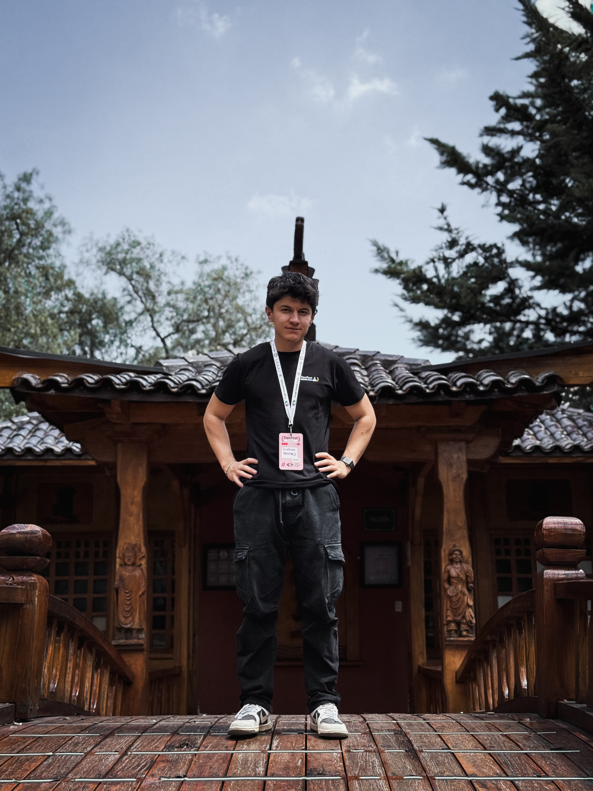
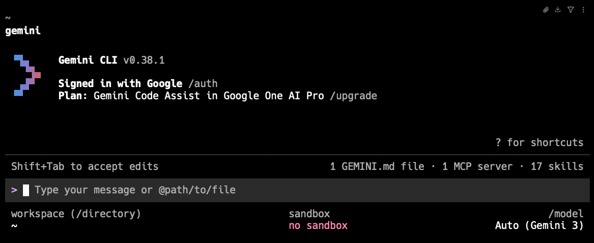
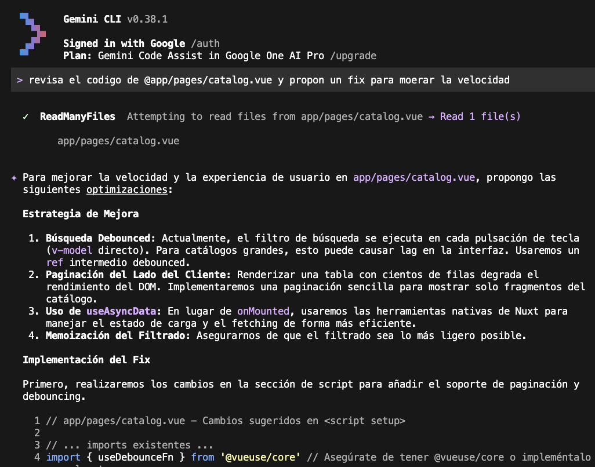
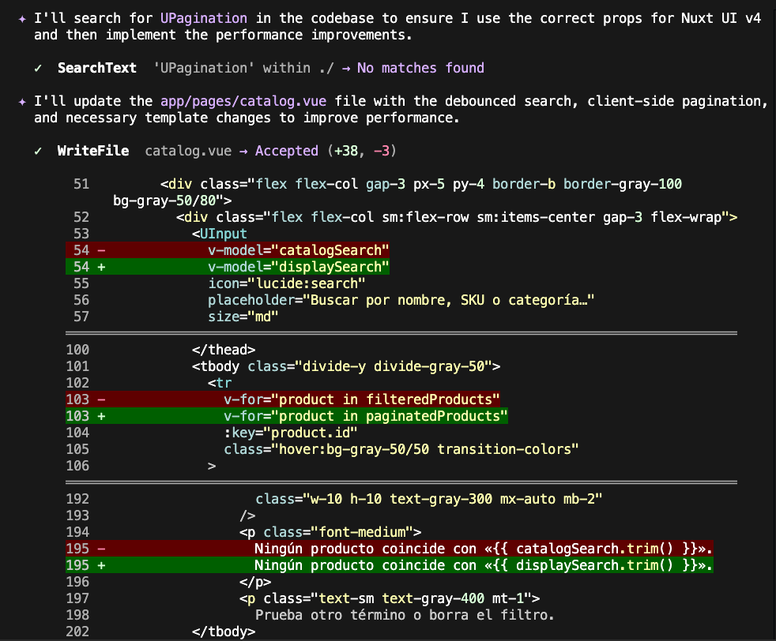
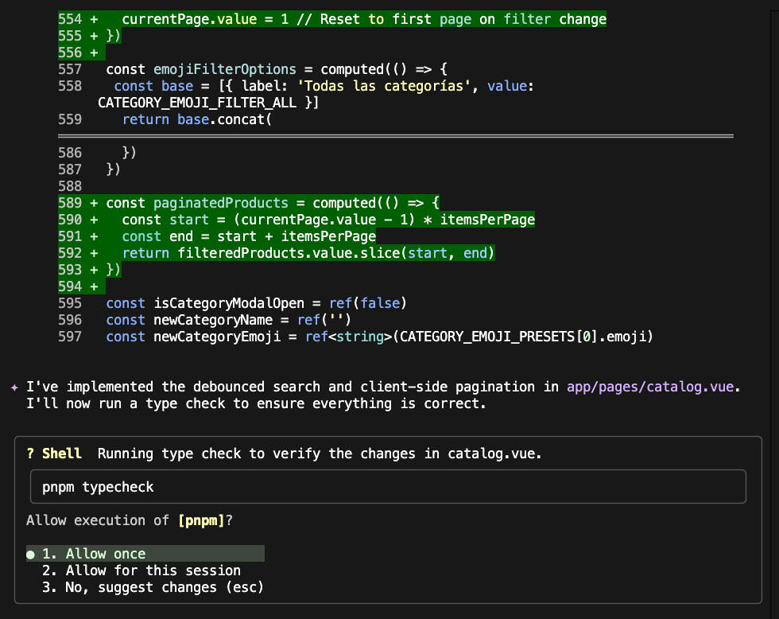

Dominando la alternativa a Claude Code.
Una sesión práctica para developers.

Desarrollador Full Stack apasionado por crear soluciones digitales elegantes, funcionales y escalables.
He construido apps robustas de alto rendimiento para StartUps de Estados Unidos y Ecuador con tecnologías modernas.
Aprendo continuamente, comparto conocimiento en comunidades tech y contribuyo a proyectos open source.
Seis paradas. Una hora. Cero BS.
Contexto, diseño, por qué existe.
De cero a primer prompt en 3 minutos.
El vocabulario mínimo para ser productivo.
Coding, refactor, docs — con código.
Cómo se amplía el ecosistema.
Lo que no sale en los docs.
Una terminal conectada a Gemini. Nada más, nada menos.
Gemini CLI es una herramienta open-source que trae el modelo Gemini directo a tu terminal — con acceso a tus archivos, a tu git y a tu entorno real.
Porque ahí es donde ya vives. Sin context switching, sin copiar-pegar a una pestaña del browser, sin perder el flow.
Lee tu repo, tu diff, tu stack — sin que se lo pegues manualmente.
Se integra con pipelines, git hooks, CI. Es una herramienta Unix más.
Codebases enteras caben en una sola conversación. Literalmente.
Ambas son excelentes. Cada una brilla en su terreno.
| Dimensión | Gemini CLI | Claude Code |
|---|---|---|
| Modelo base | Gemini 2.5 Pro / Flash | Claude Sonnet / Opus |
| Licencia | Apache 2.0 | Propietario |
| Ventana de contexto | 1M tokens | 200K tokens |
| Multimodal nativo | Sí — img, pdf, audio | Imágenes |
| Extensiones | MCP + extensiones propias | MCP |
| Free tier | 60 req/min · gratis con cuenta Google | Plan de pago |
Cero a primer prompt en tres minutos.
Requiere Node 18+ — ya lo tienes.
OAuth con tu cuenta. Gratis, 60 req/min.
geminiDesde cualquier directorio de tu repo.
Así se ve cuando abre por primera vez.

El vocabulario mínimo viable.
Control interno: guardar chat, limpiar contexto, cambiar modelo, MCP tools.
Referencia archivos o directorios. Gemini los lee antes de responder.
Ejecuta comandos del sistema sin perder el contexto de la sesión.
Tres que uso cada día.
Desde un bug abierto hasta el PR — sin salir de la terminal. Gemini lee el stack trace, los archivos relacionados y propone el fix.


La ventana de 1M tokens permite razonar sobre carpetas completas. Cambios de patrón, renames, migraciones — con preview antes de tocar disco.
READMEs, CHANGELOGs y comentarios JSDoc desde el código real. Gemini respeta tu estilo si le señalas un ejemplo con @.

El CLI por sí mismo ya es potente. Con MCP, se conecta a todo lo demás.
Issues, PRs, reviews desde la terminal.
Query directo, resultados estructurados.
Lee páginas, docs, RFCs por URL.
Exponé un script tuyo como herramienta.
GEMINI.md en el root.Convenciones del repo, stack, coding style. Gemini lo lee automáticamente.
/chat save pre-refactor para poder volver si algo explota.
Pro para tareas pesadas, Flash para Q&A. Se cambia con /model.
git diff | gemini -p "resumí este PR" — es Unix, tratalo como tal.
Instala, rompé cosas, vení con dudas.
El workshop sigue en el Q&A.